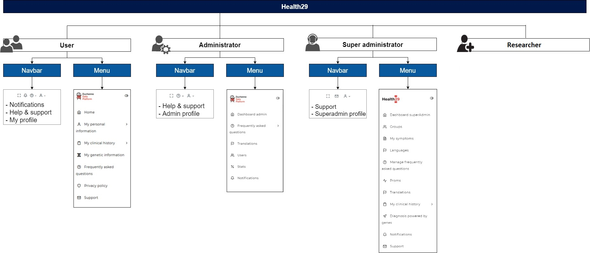
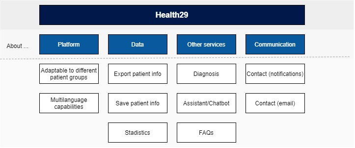

2.1. Level 1: System Context¶
There are four user profiles on this platform, so each one will have different associated functionalities: user, administrator, superadministrator and clinical.

For each group of patients we will have these three roles:
User. A user will be created for each patient in the group. For each user a series of functionalities will be provided:
Using the navbar, the user will navigate to different pages where he or she can manage the information of the user profile (name, language, weight and length units), consult the notifications or obtain help and contact the platform’s support team.
From the menu, the user will be able to access different pages to complete his or her personal and medical information, consult the FAQs or the privacy policies, or contact support.
Administrator (of each patient group).
The administrator will have the same functionalities in the navbar, except for notifications.
Using the navigation through the menu of this role, the administrator will be able to request new language or translations, manage the FAQs, and obtain information from the patients (statistics) or send them notifications/alerts.Super Administrator. This is a more technical profile. He or she can add languages to the platform, manage translations, and manage the different groups of patients (Add symptoms, FAQs, datapoints, medicines).
Furthermore, we also have the profile of the researcher. They will be able to consuming data through the API.
In general, this platform will be able to store patient data and have it managed by the administrators of the group to which it belongs. The latter will be able, on the one hand, to obtain statistical information about the interaction of the users with the platform, and on the other hand, to interact with the patients through notifications or alerts.

The functionalities offered by the Health29 platform can be encompassed, according to the image above, as follows:
Capacities of the platform: It is a multilingual platform designed to be easily adaptable to the needs or characteristics of any group of patients.
Data: it allows to store and to extract the personal information and of sanitary character of the patients. It also provides statistics on patient information to group administrators.
Communication. The platform includes several methods to establish communication between the different roles. It allows the sending of emails so that the administrators or patients can contact the technical support team, and the administrators can send notifications to the users to send them information they consider of interest.
It includes several services that allow to provide other functionalities to the application, such as a FAQ page about the specific disease of the patient group or a wizard to guide users through the platform.